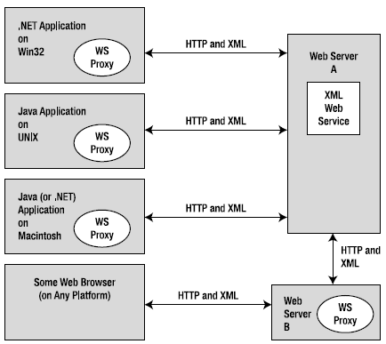

The Windows operating system has historically provided many APIs for building distributed systems. While it is true that most people consider a distributed system to involve at least two networked computers, this term in the broader sense can refer to two executables that need to exchange data, even if they happen to be running on the same physical machine. Using this definition, selecting a distributed API for your current programming task typically involves asking the following pivotal question:
Will this system be used exclusively in house, or will external users require access to the application’s functionality?
If you build a distributed system for in-house use, you have a far greater chance of ensuring that each connected computer is running the same operating system and using the same programming framework (e.g., .NET, COM, or the Java platform). Running in-house systems also means that you can leverage your existing security system for purposes of authentication, authorization, and so forth. In this situation, you might be willing to select a particular distributed API that will tie you to a specific operating system/programming framework for the purposes of performance.
In contrast, if you build a system that others must reach from outside of your walls, you have a whole other set of issues to contend with. First, you will most likely not be able to dictate to external users which operating system/s they can use, which programming framework/s they can use, or how they configure their security settings.
Second, if you happen to work for a larger company or in a university setting that uses numerous operating systems and programming technologies, an in-house application suddenly faces the same challenges as an outward-facing application. In either of these cases, you need to limit yourself to a more flexible distributed API to ensure the furthest reach of your application.
Based on your answer to this key distributed computing question, the next task is to pinpoint exactly which API (or set of APIs) to use. The following sections provide a quick recap of some of the major distributed APIs historically used by Windows software developers. Once you finish this brief history lesson, you will be able to see the usefulness of Windows Communication Foundation quite easily.
Note To ensure we are on the same page here, I feel compelled to point out that WCF (and the technologies it encompasses) has nothing to do with building an HTML-based web site. While it is true that web applications can be considered distributed because two machines are typically involved in the exchange, WCF is about establishing connections between machines to share the functionality of remote components—not for displaying HTML in a web browser. Chapter 32 will initiate your examination of building websites with the .NET platform.
Prior to the release of the .NET platform, the Distributed Component Object Model (DCOM) was the remoting API of choice for Microsoft-centric development endeavors. Using DCOM, it was possible to build distributed systems using COM objects, the system registry, and a good amount of elbow grease. One benefit of DCOM was that it allowed for location transparency of components. Simply put, this allowed you to program client software in such a way that the physical locations of the remote objects were not hard-coded in the application. Regardless of whether the remote object was on the same machine or a secondary networked machine, the code base could remain neutral because the actual location was recorded externally in the system registry.
While DCOM did enjoy some degree of success, for all practical purposes it was a Windows-centric API. DCOM alone did not provide a fabric to build comprehensive solutions involving multiple operating systems (e.g., Windows, Unix, and Mac) or promote sharing of data between diverse architectures (e.g., COM, Java, or CORBA).
Note There were some attempts to port DCOM to various flavors of Unix/Linux, but the end results were lackluster and eventually became technology footnotes.
By and large, DCOM was best suited for in-house application development because exposing COM objects outside company walls entailed a set of additional complications (firewalls and so forth). With the release of the .NET platform, DCOM quickly became a legacy programming model; and unless you maintain legacy DCOM systems, you can consider it a deprecated technology.
DCOM alone did little more than define a way to establish a communication channel between two pieces of COM-based software. To fill in the missing pieces required for building a feature-rich distributed computing solution, Microsoft eventually released Microsoft Transaction Server (MTS), which was later renamed to COM+.
Despite its name, COM+ is not used only by COM programmers—it is completely accessible to .NET professionals, as well. Since the first release of the .NET platform, the base class libraries provided a namespace named System.EnterpriseServices. Here, .NET programmers could build managed libraries that could be installed into the COM+ runtime to access the same set of services as a traditional COM+- aware COM server. In either case, once a COM+-aware library was installed into the COM+ runtime, it was termed a serviced component.
COM+ provides a number of features that serviced components can leverage, including transaction management, object lifetime management, pooling services, a role-based security system, a loosely coupled event model, and so on. This was a major benefit at the time, given that most distributed systems require the same set of services. Rather than forcing developers to code them by hand, COM+ provided an out-of-the-box solution.
One of the compelling aspects of COM+ was the fact that all of these settings could be configured in a declarative manner using administrative tools. Thus, if you wished to ensure an object was monitored under a transactional context or belonged to a particular security role, you simply selected the correct check boxes.
While COM+/Enterprise Services is still in use today, this technology is a Windows-only solution that is best suited for in-house application development or as a back-end service indirectly manipulated by more agonistic front ends (e.g., a public website that makes calls on serviced components [aka COM+ objects] in the background).
Note WCF does not provide a way to build serviced components. However, it does provide a manner for WCF services to communicate with existing COM+ objects. If you need to build serviced components using C#, you will need to make direct use of the System.EnterpriseServices namespace. Consult the .NET Framework 4.0 SDK documentation for details.
The Microsoft Message Queuing (MSMQ) API allows developers to build distributed systems that need to ensure reliable delivery of message data on the network. As developers know all too well, in any distributed system there is the risk that a network server is down, a database is offline, or connections are inexplicably lost. Furthermore, you must construct many applications in such a way that they hold message data for delivery at a later time (this process is known as queuing data).
Microsoft initially packaged MSMQ as a set of low-level C-based APIs and COM objects. With the release of the .NET platform, C# programmers could use System.Messaging namespace to hook into MSMQ and build software that communicated with intermittently connected applications in a dependable fashion.
On a related note, the COM+ layer incorporated MSMQ functionality into the runtime (in a simplified format) using a technology termed Queued Components (QC). This manner of communicating with MSMQ was packaged up into the System.EnterpriseServices namespace mentioned in the previous section.
Regardless of which programming model you used to interact with the MSMQ runtime, the end result ensured that applications could deliver messages in a reliable and timely fashion. Like COM+, MSMQ is still part of the fabric of building distributed software on the Windows operating system.
As mentioned previously, DCOM quickly became a legacy distributed API after the release of the .NET platform. In its place, the .NET base class libraries shipped with the .NET remoting layer, represented by the System.Runtime.Remoting namespace. This API allows multiple computers to distribute objects, provided they all run the applications under the .NET platform.
The .NET remoting APIs provided a number of useful features. Most important was the use of XMLbased configuration files to define declaratively the underlying plumbing used by the client and the server software. Using *.config files, it was easy to alter the functionality of your distributed system radically simply by changing the content of the configuration files and restarting the application.
Also, given that only .NET applications can use this API is usable, you can gain various performance benefits because data can be encoded in a compact binary format, and you can use the Common Type System (CTS) when defining parameters and return values. While it is possible to use.NET remoting to build distributed systems that span multiple operating systems (using Mono, which was briefly mentioned in Chapter 1 and detailed in Appendix B), interoperability between other programming architectures (e.g., Java) was still not directly possible.
Each of the previous distributed APIs provided little (if any) support to allow external callers to access the supplied functionality in an agnostic manner. When you need to expose the services of remote objects to any operating system and any programming model, XML web services provide the most straightforward way of doing so.
Unlike a traditional browser-based web application, a web service provides a way to expose the functionality of remote components using standard web protocols. Since the initial release of .NET, programmers have been provided with superior support for building and consuming XML web services with the System.Web.Services namespace. In many cases, building a feature-complete web service is no more complicated than applying the [WebMethod] attribute to each public method you wish to provide access to. Furthermore, Visual Studio 2010 allows you to connect to a remote web service with the click of a button (or two).
Web services allow developers to build .NET assemblies containing types that can be accessed using simple HTTP. Furthermore, a web service encodes its data as simple XML. Given the fact that web services are based on open industry standards (e.g., HTTP, XML, and SOAP) rather than proprietary type systems and proprietary wire formats (as is the case with DCOM or .NET remoting), they allow for a high degree of interoperability and data exchange. Figure 25-1 illustrates the agnostic nature of XML web services.
Figure 25-1 XML web services allow for a high degree of interoperability
Of course, no distributed API is perfect. One potential drawback of web services is the fact that they can suffer from some performance issues (given the use of HTTP and XML data representation); another drawback is that they might not be an ideal solution for in-house applications where you could use a TCP-based protocol and binary formatting of data without incurring a penalty.